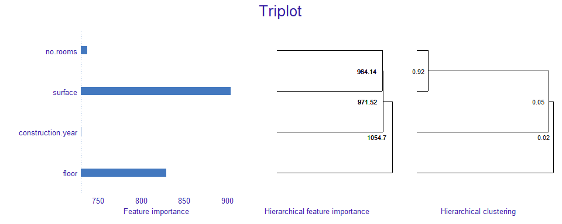
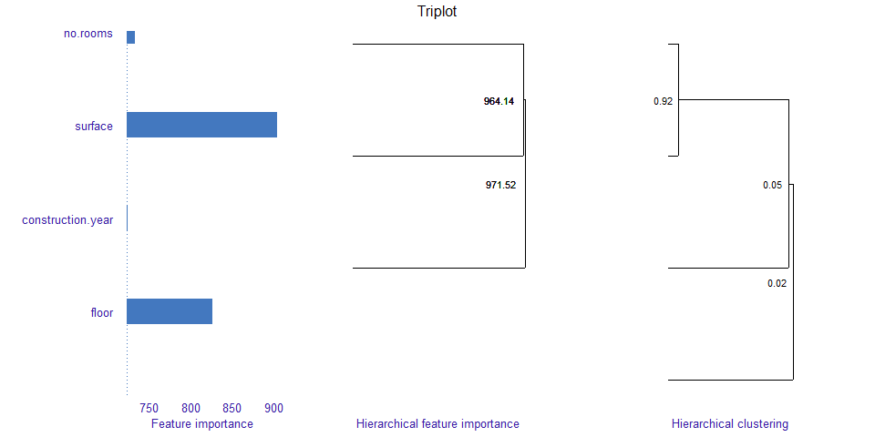
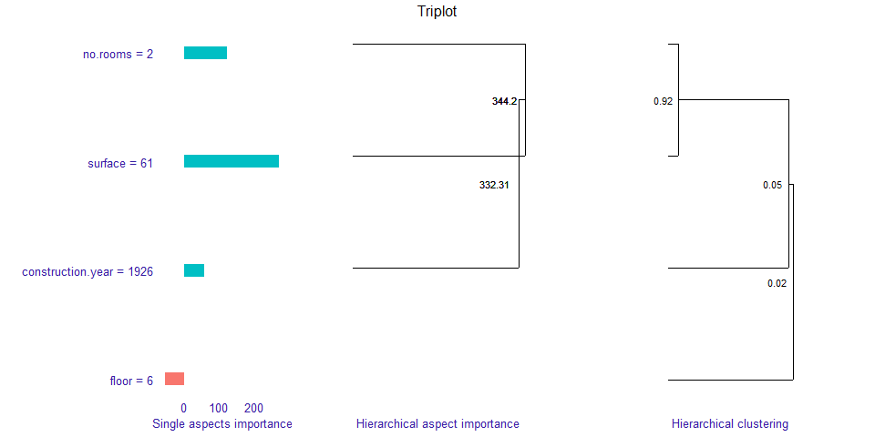

Overview
The triplot package provides tools for exploration of machine learning predictive models. It contains an instance-level explainer called predict_aspects (AKA aspects_importance), that is able to explain the contribution of the whole groups of explanatory variables. Furthermore, package delivers functionality called triplot - it illustrates how the importance of aspects (group of predictors) change depending on the size of aspects.
Key functions:
-
predict_aspects()for calculating the feature groups importance (called aspects importance) for a selected observation, -
predict_triplot()andmodel_triplot()for summary of automatic aspect importance grouping, -
group_variables()for grouping numeric features into aspects.
The triplot package is a part of DrWhy.AI universe. More information about analysis of machine learning models can be found in the Explanatory Model Analysis. Explore, Explain and Examine Predictive Models e-book.
Basic example
For the titanic dataset we build logistic regression model that predicts passenger survival. Afterwards, we group features into thematical aspects. We are interested in explaining the model prediction for the chosen_passenger.
chosen_passenger <- titanic[2,] chosen_passenger
predict(model_titanic_glm, chosen_passenger, type = "response")
It turns out that the model prediction for this passenger’s survival is very low.
Let’s see which aspects have the biggest influence on it.
We start by building DALEX explainer and use it to call predict_aspects() function. Afterwards, we print and plot function results.
We can observe that wealth variables have the biggest contribution to the prediction. This contribution is of a negative type. Family variables have positive influence on the prediction, but it is many times smaller. Rest of the aspects have very small contribution to the prediction.
explain_titanic <- explain(model_titanic_glm, data = titanic[, -8], y = titanic$survived == "yes", predict_function = predict, label = "Logistic Regression", verbose = FALSE) ai_titanic <- predict_aspects(x = explain_titanic, new_observation = chosen_passenger[,-8], variable_groups = aspects_titanic) print(ai_titanic, show_features = TRUE)
## variable_groups importance features
## 2 wealth -0.68985 class, fare
## 3 family 0.14762 sibsp, parch
## 5 embarked -0.13525 embarked
## 4 personal -0.06915 age, genderplot(ai_titanic, add_importance = TRUE)

Triplot
Triplot is a tool that allows us to go one step further in our understanding of the inner workings of a black box model.
We can use it to investigate the instance level importance of features (using predict_aspects function) or to illustrate the model level importance of features (using model_parts function from DALEX package).
Triplot shows, in one place:
- the importance of every single feature,
- hierarchical aspects importance,
- order of grouping features into aspects in
group_variables().
Triplot can be only used on numerical features.
To showcase triplot, we will choose numeric features from apartments dataset, build DALEX explainer, model_triplot() to calculate triplot object and then plot it.
We can observe that, at the model level, surface and floor have the biggest contribution. Number of rooms and surface are strongly correlated and together have strong influence on the prediction.
tri_apartments <- model_triplot(explain_apartments) plot(tri_apartments)

Afterwards, we are building triplot for single instance and it’s prediction.
We can observe that for the given apartment surface has also big, positive influence on prediction. Adding number of rooms and then construction year to surface's aspect, increases its contribution.
We can see notice that floor has the smallest influence on the prediction, unlike in model wise analysis.
tri_apartments <- predict_triplot(explain_apartments, new_observation = new_observation_apartments) plot(tri_apartments)
